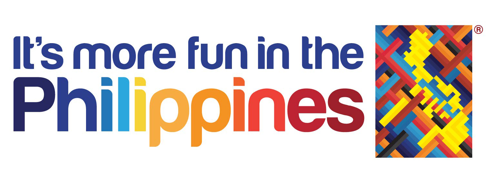
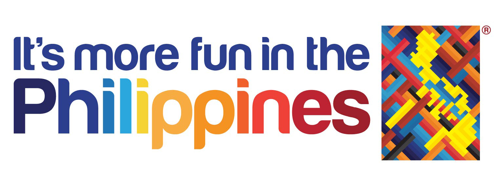

In Memoriam: Napoleon Abueva’s iconic work
MANILA, Philippines – National Artist for Visual Arts (Sculpture) Napoleon Abueva died at 88 on Friday, February 16, but he lives on in the work he left behind. His sculptures and designs are so popular that you might not have realized that you see them every day – whenever you visit The Peninsula Manila, the National Museum, or even the University of the Philippines (UP) in Diliman.
Below are some of Abueva’s work that have been woven into the Philippines’ history and culture.
Sandugo
Abueva, who hailed from Bohol, created this sculpture depicting Rajah Sikatuna and Miguel Lopez de Legazpi of Spain. It is located in Barangay Bool, Tagbilaran City.
Three Dancers
The piece below, titled "Three Dancers," is part of a private collection in Quezon City.

Transfiguration (1979)
Eternal Gardens Memorial Park's symbol – an image of Christ with his arms outstreched – is called "Transfiguration" and was designed and executed by Abueva. The first one that Abueva made can be found at Baesa, Caloocan City. He later made the ones at Eternal Gardens Cabanatuan and Eternal Gardens Santa Rosa.

Magdangal (2008)
One of Abueva's many sculptures in UP Diliman, "Magdangal" was created in celebration of UP's centennial year in 2008. The bronze statue stands in front of the College of Arts and Letters building.
Siyam na Diwata ng Sining (1994)
Found in UP Diliman's Hardin ng mga Diwata, Abueva's "Siyam na Diwata ng Sining" represents the 9 muses: architecture, dance, film, literature, music, painting, photography, sculpture, and theater.
Sunburst (1994)
The "Sunburst" greets the Peninsula Manila's guests as they enter the hotel's lobby. Next time you visit, look up!
Spirit of Business (1979)
Another UP Diliman sculpture, Abueva's "Spirit of Business" can be found in front of the College of Business Administration.
The National Museum's door handles
They might not be big and bold, but pay attention next time you visit the National Museum. The doors that lead to their main galleries have handles that spell out "NM" – designed by none other than Abueva.
Subscribe to MANILArt and receive weekly updates.


MANILArt is an arts and humanities website which aims to promote the history and culture of Manila.


 
